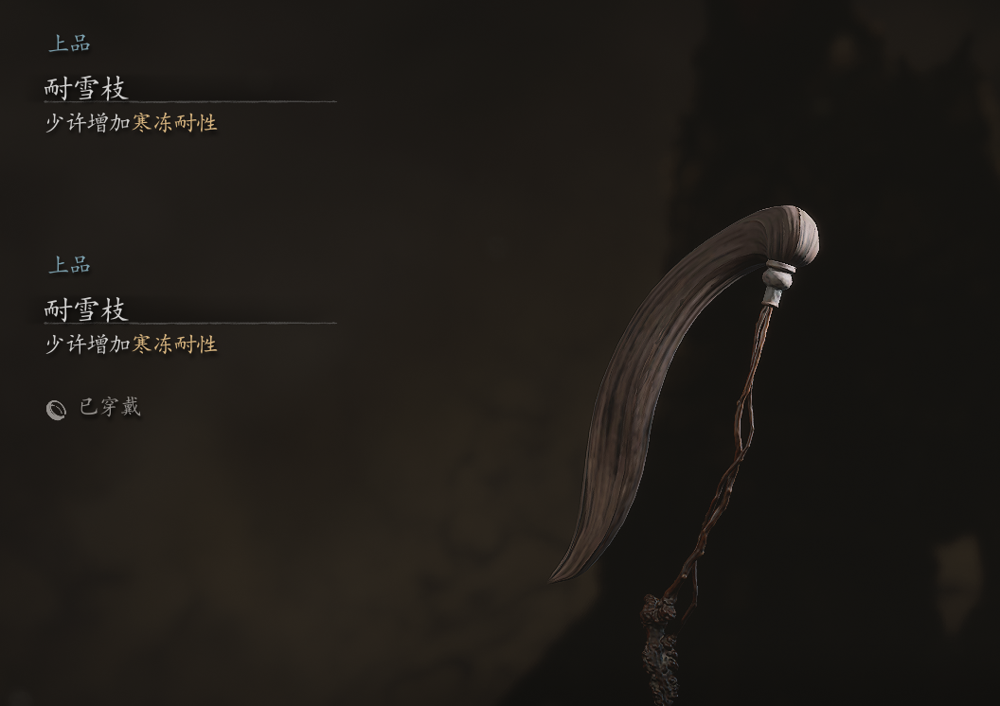

竹银拂尘
材质与构造
柄部通常由质地坚硬且手感舒适的竹子制成，竹节凸起，形态自然。拂尘的尾部通常由马鬃、马尾等动物毛发制成，柔软而富有弹性。
装饰工艺
传统竹拂尘可能饰有雕刻、镶嵌等工艺，现代拂尘可能使用银质或其他贵金属材料作为装饰，增加艺术价值。
文化寓意
拂尘作为清洁工具，寓意清除烦恼、净化心灵。在佛教和道教中，拂尘常被用作法器，象征清除世间污垢和杂念。竹子作为高雅象征，使得竹拂尘在文人墨客中备受推崇。
使用场合
在佛教和道教寺庙中，拂尘常被用作法器，在宗教仪式中发挥重要作用。在古代文人墨客中，拂尘不仅是实用工具，更是清谈时的道具，象征文人的高雅和睿智。日常清洁方面，拂尘也被广泛用于家庭日常清洁中。
现代社会角色
竹银拂尘已逐渐从实用工具转变为艺术品和收藏品。工艺大师将其精湛技艺融入拂尘制作中，使其不仅具有实用价值，更成为了一种独特的文化符号和艺术品。
总结
竹银拂尘作为一种传统器物，在材质、构造、文化寓意和使用场合等方面都蕴含着丰富的文化内涵和美学价值。它不仅是中国传统文化的重要组成部分，也是现代人追求心灵平静和精神寄托的宝贵财富。
图片
游戏截图

实物图片